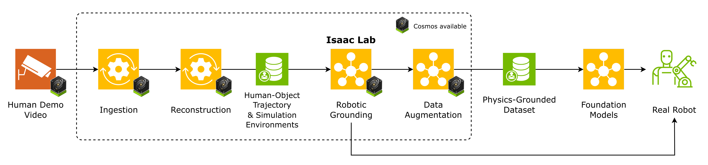
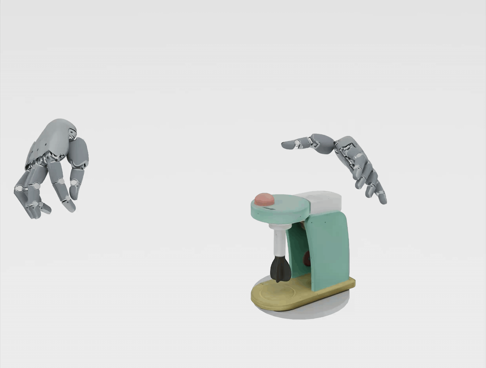

From human video to robot data
Raw human video becomes video segments, reconstructed trajectories, simulation assets, grounded policies, and robot data.

Video Ingestion Agent
LangGraph workflow that segments demos into action clips, extracts an entity-relation scene graph, and stores SigLIP-2 frame embeddings.
Reconstruction
Containerized vision modules turn selected clips into per-frame depth, masks, textured meshes, 6-DoF object poses, and parametric human hand and body models.
Robotic Grounding
Retarget human motion onto the target embodiment, then drive Isaac Lab environments trained with RL to produce deployable policies.
See it run, stage by stage



Explore the toolkit
Video → action segments, an entity scene graph, and frame embeddings. LangGraph pipeline plus an EGAgent-style natural-language retrieval agent and an optional Gradio UI.
Open docs →Video → depth, masks, object meshes, 6D pose trajectories, and human body mesh and motion.
Open docs →Motion retargeting and RL training in Isaac Lab with contact-wrench guidance from human demonstrations.